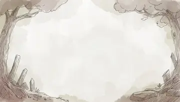

Nature Seed Yoʻlni chizing. Ularni birga keltiring.
Brauzerda bepul o'ynash mumkin bo'lgan chizib yechiladigan fizik boshqotirma. Cheklangan siyoh bilan chiziq torting, u Water Drop'ni Seed'ga yetkazadigan nishab, ko'prik yoki tutib qoluvchi nuqtaga aylanadi. Har bir yechilgan daraja akvarel o'rmon manzarasini qayta tiklaydi.
2026-yil 18-sentabrda 100 ta daraja, chiziq samaradorligi yulduzlari va saqlanadigan progress bilan chiqdi. itch.io, Game Jolt va indiexpo'da bepul; maqsad - iOS va Android versiyasi, u ilova do'konlarida hali yo'q.
Chizishcheklangan siyoh bilan chizing
UlanishWater Drop-ni Seed-ga keltiring
Gullasho'rmonni qaytaring
Joriy yig'ilma ichida
Siz chizgan narsa darajaning bir qismiga aylanadi.
Siz tortgan har bir chiziq haqiqiy to'qnashuvlarga ega qattiq jismga aylanadi, Water Drop va Seed esa unga javob beradi. Siyoh ham, chiziqlar soni ham cheklangan, shuning uchun chiziq shakli muhim.
Chiqarish holati 2026-yil 18-sentabrda chiqarilgan

Oʻyin haqida umumiy maʼlumot
Ikki kichik qahramonni uchrashtirish haqidagi xotirjam, chizib yechiladigan boshqotirma.
G'oya
Yo'l chizing, Water Drop va Seed'ni uchrashtiring va sokin eskizning jonlanishini tomosha qiling.
Chiqarilgan yig'ilma
Sensorli chizish, chiziq samaradorligi uchun yulduzlar va seanslar orasida saqlanadigan progressli 100 ta o'ynash mumkin bo'lgan daraja.
Tomoshabinlar
Sokin boshqotirmalar, yengil fizika, tabiat mavzusi va shoshilmaydigan mobil seanslarni yoqtiradigan o'yinchilar.
Holat
2026-yil 18-sentabrda chiqdi, brauzerda bepul o'ynash mumkin. Maqsad - mobil versiya; u ilova do'konlarida hali yo'q.
Xususiyatlar
Nature Seed o'yinida nima qilasiz.
Chizib yechiladigan jismoniy yoʻllar
Har bir boshqotirma relyef, Seed va Water Drop bilan boshlanadi. O'yinchining chizig'i ularni bog'laydigan nishab, ko'prik yoki tutib qoluvchi nuqtaga aylanadi.
Fizikaning aniq javobi
Water Drop va Seed tushunarli harakatlanadi, shuning uchun muvaffaqiyatsiz urinish nimani o'zgartirish kerakligini ko'rsatadi.
O'rmonni tiklash mukofotlari
Darajani tugatsangiz, eskiz sahna rangga va o'sib borayotgan daraxtlarga to'ladi.
Qisqa darajalar, sensorli chizish
Darajalar qisqa, chizishni esa barmoq bilan bajarasiz, bu telefondagi tezkor seanslarga mos keladi.
Oʻyin sikli
Nature Seed o'yinini qanday o'ynash
- 01-qadamEskizni o'qing
Nishablar, tirqishlar va to'siqlarni, shuningdek ikki qahramonni bog'lashning eng xavfsiz yo'lini qidiring.
- 02-qadamChiziqni chizing
Chizig'ingizni torting. Chiziq qahramonlar uchun nishab, yo'naltiruvchi yoki tutib qoluvchi nuqtaga aylanadi.
- 03-qadamTasdiqlang va kuzating
Chiziqni tasdiqlang va qahramonlar qanday javob berishini tomosha qiling. Nima ishlagani va nima ishlamagani darhol ko'rinadi.
- 04-qadamGullash yoki takomillashtirish
Water Drop Seed'ga yetib borsa, o'rmon qaytadi. Yetmasa, yangi bilganingizni hisobga olib, qayta chizing.
Hikoya / dunyo
Eskiz o'rmon suvni kutmoqda.
Nature Seed narsalarni bir-biriga itarish o'rniga nozik narsani tiklash haqidagi chizib yechiladigan fizik boshqotirma sifatida boshlangan.
Qahramonlar - Seed, Water Drop va o'yin davomida eskizdan rangga qaytadigan o'rmon. Har bir boshqotirma - kichik ish: yerni o'rganish, yo'l chizish va suvga o'sa oladigan narsaga yetib borishiga yordam berish.
- Dizayn yo'nalishi
- Sokin fizika va ko'rinadigan tiklash
- Qahramonlar
- Water Drop va Seed
- O'zaro aloqa
- Sensorli chizish
- Ustalik uchun mukofot
- Bir qatorli yechim uch yulduz oladi
Qisqacha
Bugun brauzerda bepul, maqsadli platforma - mobil qurilmalar.
Sizda cheklangan siyoh va cheklangan chiziqlar soni bor. Ulardan Water Drop'ni Seed'ga yetkazish uchun foydalaning, keyin darajani qayta o'ynab, yechimni uch yulduz uchun bitta chiziqqacha qisqartiring.
- Janr
- Chizib yechiladigan fizik boshqotirma
- Maqsadli platforma
- iOS / Android
- Sessiya formati
- Qisqa tinch darajalar
Materiallarni yuklab oling
Nature Seed matbuot va ijodkor materiallari
Matbuotda yoritish, nashriyotchilar ko'rib chiqishi va do'kon sahifasi havolalari uchun WebP oldindan ko'rish fayllari. To'liq o'lchamdagi manba fayllar so'rov bo'yicha mavjud.
Brend va qahramonlar
 Water DropSeed'ga yetib borishi kerak bo'lgan ko'k qahramon.
Water DropSeed'ga yetib borishi kerak bo'lgan ko'k qahramon.
 Seed qahramoniWater Drop yetib borishga harakat qilayotgan yashil qahramon.
Seed qahramoniWater Drop yetib borishga harakat qilayotgan yashil qahramon.
 Daraxt o'sishiYechilgandan keyin o'sadigan daraxt.
Daraxt o'sishiYechilgandan keyin o'sadigan daraxt.
 O'rmon menyusiAsosiy menyu foni.
O'rmon menyusiAsosiy menyu foni.


Oʻyin foniBo'sh o'yin maydoni bor daraja foni.Chizib yechiladigan eskiz darajalari
 Eskiz darajasi 01Yechishdan oldingi eskiz.
Eskiz darajasi 01Yechishdan oldingi eskiz.
 Eskiz darajasi 02Yechishdan oldingi eskiz.
Eskiz darajasi 02Yechishdan oldingi eskiz.
 Eskiz darajasi 03Yechishdan oldingi eskiz.
Eskiz darajasi 03Yechishdan oldingi eskiz.
 Eskiz darajasi 04Yechishdan oldingi eskiz.
Eskiz darajasi 04Yechishdan oldingi eskiz.
 Eskiz darajasi 05Yechishdan oldingi eskiz.
Eskiz darajasi 05Yechishdan oldingi eskiz.
 Eskiz darajasi 06Yechishdan oldingi eskiz.
Eskiz darajasi 06Yechishdan oldingi eskiz.
 Eskiz darajasi 07Yechishdan oldingi eskiz.
Eskiz darajasi 07Yechishdan oldingi eskiz.
 Eskiz darajasi 08Yechishdan oldingi eskiz.
Eskiz darajasi 08Yechishdan oldingi eskiz.
 Eskiz darajasi 09Yechishdan oldingi eskiz.
Eskiz darajasi 09Yechishdan oldingi eskiz.
 Eskiz darajasi 10Yechishdan oldingi eskiz.
Eskiz darajasi 10Yechishdan oldingi eskiz.
Qayta tiklangan boshqotirma sahnalari
 01-daraja tiklandiYechilgandan keyin tiklanadi.
01-daraja tiklandiYechilgandan keyin tiklanadi.
 02-daraja tiklandiYechilgandan keyin tiklanadi.
02-daraja tiklandiYechilgandan keyin tiklanadi.
 03-daraja tiklandiYechilgandan keyin tiklanadi.
03-daraja tiklandiYechilgandan keyin tiklanadi.
 04-daraja tiklandiYechilgandan keyin tiklanadi.
04-daraja tiklandiYechilgandan keyin tiklanadi.
 05-daraja tiklandiYechilgandan keyin tiklanadi.
05-daraja tiklandiYechilgandan keyin tiklanadi.
 06-daraja tiklandiYechilgandan keyin tiklanadi.
06-daraja tiklandiYechilgandan keyin tiklanadi.
 07-daraja tiklandiYechilgandan keyin tiklanadi.
07-daraja tiklandiYechilgandan keyin tiklanadi.
 08-daraja tiklandiYechilgandan keyin tiklanadi.
08-daraja tiklandiYechilgandan keyin tiklanadi.
 09-daraja tiklandiYechilgandan keyin tiklanadi.
09-daraja tiklandiYechilgandan keyin tiklanadi.
 10-daraja tiklandiYechilgandan keyin tiklanadi.
10-daraja tiklandiYechilgandan keyin tiklanadi.
Ishlab chiqish xronologiyasi
Nature Seed ishlab chiqish xronologiyasi
- 2025-yil yoziDastlabki konsepsiya
Nature Seed bog'liqlik va tabiatni tiklash haqidagi sokin mobil boshqotirma g'oyasidan boshlangan.
- 2025 yil oktyabrSeed va Water Drop qiyofasi
Biz dizayn hujjatini tugatib, Seed va Water Drop'ni asosiy qahramonlar qilib tanladik.
- 2025 yil dekabrIshlab chiqish boshlanadi
Biz birinchi darajalarni qog'ozda rejalashtirdik, keyin qura boshladik va asosiy tizimlar o'ynash mumkin bo'ldi.
- 2026 yil fevralDarajalarning katta dastlabki qoralamasi
Darajalar ustida qilingan katta dastlabki ishlov bizga keyingi sayqallash va balanslash uchun asos berdi.
- 2026 yil mart-aprelMexanika va darajani ko'rib chiqish
Biz qo'shimcha mexanikalar va qoralama darajalarni ko'rib chiqdik, keyin o'yin sokin qolishi uchun ularni soddalashtirdik yoki qayta ishladik.
- 2026 yil iyulVertikal prototipni qayta ishlash
Iyul yig'ilmasida cheklangan siyoh bilan chizish, samaradorlik yulduzlari, saqlanadigan progress va barqaror chiziq generatsiyasi bitta o'ynash mumkin bo'lgan siklga jamlandi.
- 2026 yil 18 sentyabrNature Seed nashri
O'yin Nature Seed nomi bilan chiqdi: 100 ta daraja, chiziq samaradorligi yulduzlari, saqlanadigan progress va akvarel tiklash sahnalari.
Nature Seed FAQ
Nature Seed haqida tez-tez beriladigan savollar
Nature Seed bepulmi?
Ha. Uni brauzerda itch.io, Game Jolt va indiexpo'da bepul o'ynash mumkin.
Nature Seed chiqdimi?
Ha. U 2026-yil 18-sentabrda 100 ta daraja bilan chiqdi. iOS va Android versiyasi - maqsadli platforma, u ilova do'konlarida hali yo'q.
Nature Seed qanday o'yin?
Ko'ngilni xotirjam qiladigan, chizib yechiladigan fizik boshqotirma. Siz chizgan chiziqlar qattiq jismlarga aylanib, Water Drop va Seed'ning uchrashishiga yordam beradi.
Nature Seed qanday o'ynaladi?
Relyefni o'qing, cheklangan siyoh bilan marshrut chizing va ikkala qahramon qanday javob berishini tomosha qiling. Yetmasa, qayta chizing. Chiziq kam bo'lsa, yulduz ko'p, bitta chiziq esa uch yulduz beradi.
Nature Seed o'yinini kim yaratadi?
WillowinWorlds - mobil boshqotirmalar va arkadalar yaratadigan mustaqil studiya.
Nature Seed matbuot materiallaridan foydalansam bo'ladimi?
Ha, matbuot, nashriyotchilar ko'rib chiqishi va do'kon havolalari uchun. Manba fayllar so'ramaguningizcha yopiq qoladi.
Nature Seed Devlog
Nima va qachon o'zgardi
- Nature Seed nashri
Nature Seed yakuniy nomi bilan itch.io, Game Jolt va indiexpo'da 100 ta daraja, chiziq samaradorligi yulduzlari va saqlanadigan progressli bepul brauzer o'yini sifatida chiqdi.
- 2-daraja tiklash va barqarorlik ishlovi
2-daraja endi o'zining ishlab chiqarish fon juftligidan foydalanadi, bunda yanada ishonchli darajani sozlash, to'qnashuvlarni tekshirish va yakuniy fikr-mulohazalar mavjud.
- 2026 yil iyulO'ynaladigan yig'ilma
Iyul yig'ilmasi cheklangan siyoh bilan chizishni, samaradorlik yulduzlarini, saqlanadigan progressni va tiklash javobini birlashtirdi.
- 2026 yil aprelDarajalarni qayta ishlash
Ichki ko'rikdan so'ng murakkablikni kamaytirish va telefonda tushunarliroq qilish uchun bir nechta qoralama darajani qayta ishladik.
- 2026 yil martMexanika sharhi
Biz qo'shimcha mexanikalarni sinab, darajalarni gavjum ko'rsatganlarini olib tashladik.
- 2026 yil fevralDarajalarning katta dastlabki qoralamasi
Darajalar ustida qilingan katta dastlabki ishlov keyingi sayqallash va balanslash uchun asos bo'ldi.
- 2025 yil dekabrIshlab chiqish boshlanadi
Asosiy tizimlar dizayn hujjatidan o'ynash mumkin bo'lgan shaklga o'tdi.
- 2025-yil yoziDastlabki konsepsiya
Nature Seed'ning birinchi versiyasi bog'liqlik va tabiatni tiklash haqidagi sokin boshqotirma g'oyasi edi.